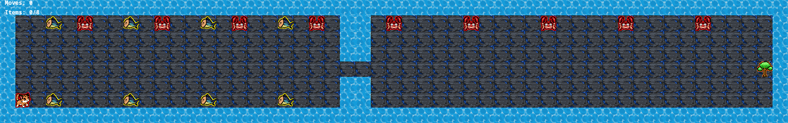
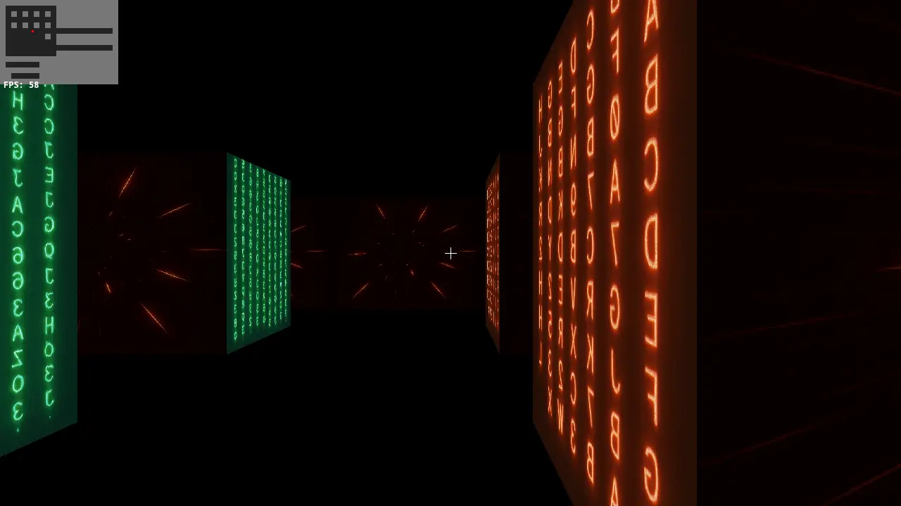

Développeur · 42 Lausanne · Kepler Cheuvreux
Du service en salle
au service en prod.
- 12ans en restauration
- 6/7cercles de 42 validés
- 2services en production
Index
Manager au Café du Simplon
Entrée à 42 Lausanne
Push_swap
“first algo / not last”
So_long
“survived mlx. don't recommend”

Philosophers
“i think... ZzZzzzZ”
Sortie réelle du programme
Traces réelles de mon binaire, enregistrées puis rejouées : les threads ne peuvent pas tourner sur un site statique.
Minishell
“read between lines lol”
Processus de la commande en cours
Session enregistrée sur mon binaire. Les appels fork, execve, pipe, dup2 et waitpid sont captés à l’édition de liens, sans modifier le code.
Cub3D
“not really a 3D cube”

W A S D avancer · ← → tourner · E ouvrir une porte · F1 souris · Échap quitter
Inception
“dream big”
Ordre de démarrage (depends_on)
Services, ports publiés, volumes et dépendances lus dans mon docker-compose.yml ; liens entre services tels que décrits dans le README.
card-price-tracker
Prix tendance CardMarket, en euros. Instantané exporté de mon API au moment de la mise à jour du site.
annonces
Daily-Jobs-Offers
Anthropic Academy
Certifié 21 fois par Anthropic.
- 01Claude CodeClaude Code in Action
- 02APIBuilding with the Claude API
- 03MCPModel Context Protocol: Advanced Topics
- 04AgentsIntroduction to subagents
- Claude Code 101
- Claude Platform 101
- Introduction to agent skills
- Introduction to Model Context Protocol
- AI Capabilities and Limitations
- AI Fluency for Builders
- AI Fluency for Creative Work
- AI Fluency for educators
- AI Fluency for nonprofits
- AI Fluency for pK–12 Educators
- AI Fluency for Small Businesses
- AI Fluency for students
- AI Fluency: Framework & Foundations
- Claude 101
- Deploying Claude Enterprise with Confidence: The five decisions that shape your rollout
- Introduction to Claude Cowork
- Teaching AI Fluency